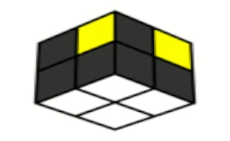
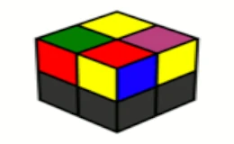
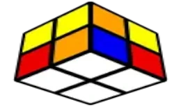

LBL-Layer By Layer
Nejjednoduší metoda pro složení kostky 2x2. Vhodné pro lidi, kteří se chtějí kostku naučit složit a pro začínající speedcubery. Obsahuje pouze jeden algoritmus.
Přejít na detail
Ortega
Speed solving metoda obsahující 15 algoritmů, která je používaná jak středně, tak i pokročilými speedcubery.
Přejít na detail
CLL
Funguje jako layer by layer, akorát je o dost efektivnější. Obsahuje 42 algoritmů. Používána pokročilými speedcubery.
Přejít na detail
EG
Má podobný princip jako ortega, akorát o dost efektivnější. Obsahuje 128 algoritmů (včetně algoritmů z metody ortega).
Přejít na detail